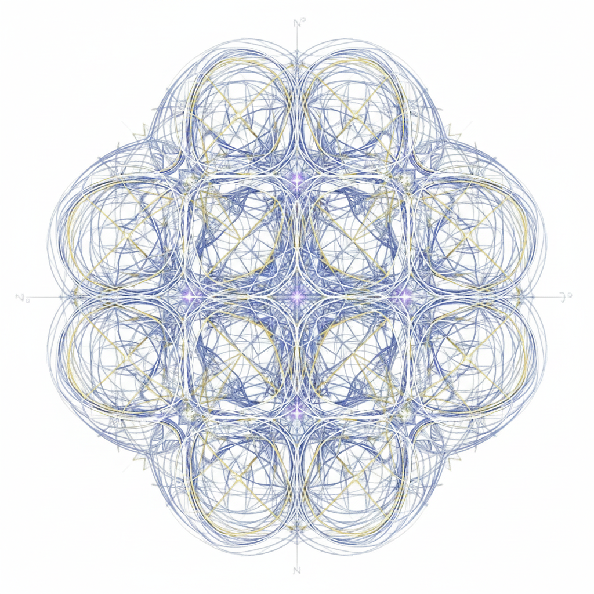

Academic Research
My academic work focuses on the intersection of mathematical frameworks and creative technologies. This section hosts my peer-reviewed publications, theoretical explorations, and software documentation.
Alongside academic and technical research, I also develop artistic research through Perceptrum², exploring augmented painting, perception, spatial interaction, and responsive environments at the intersection of art, physics, and technology.
Research Interests
Signal processing, polyphonic pitch detection, gestural mapping, variational calculus applied to sound, probabilistic systems, somatic interaction, and interactive audiovisual environments.